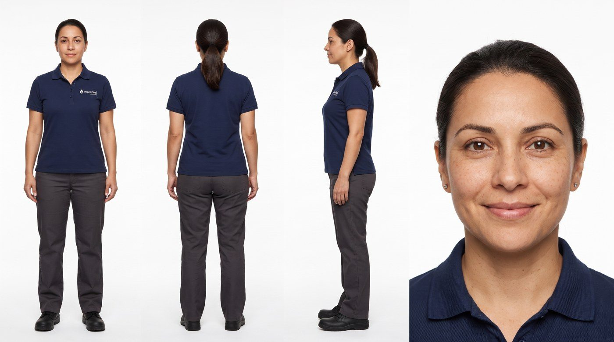
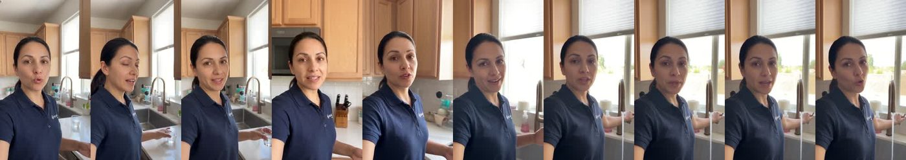
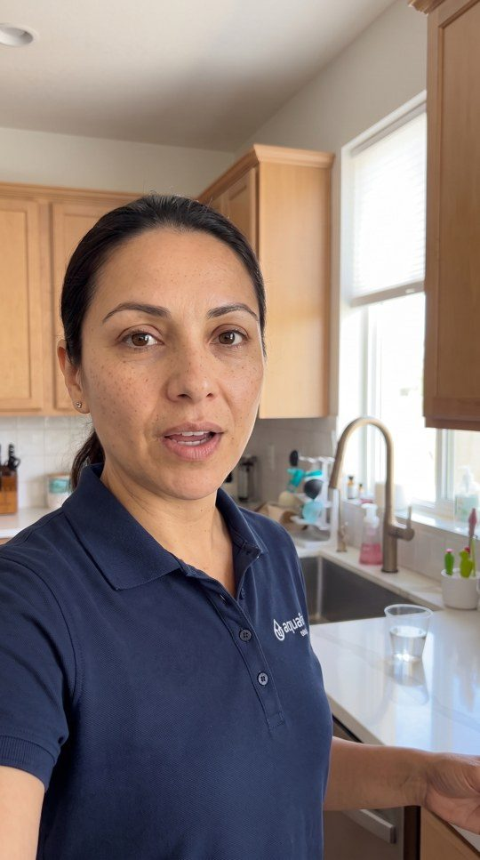
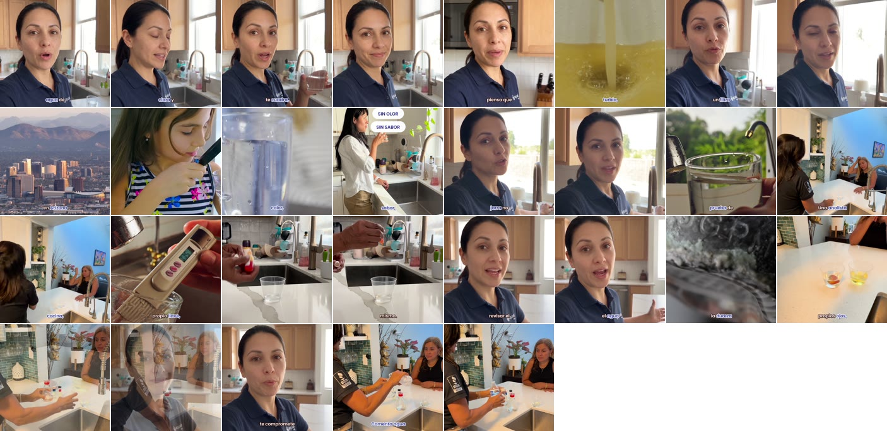
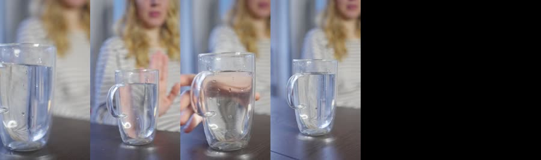
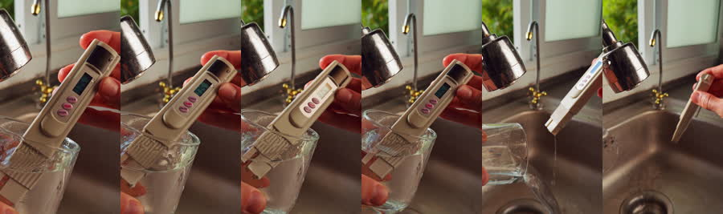
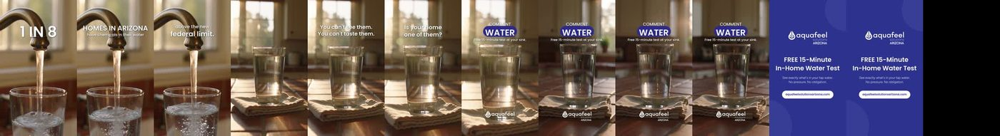
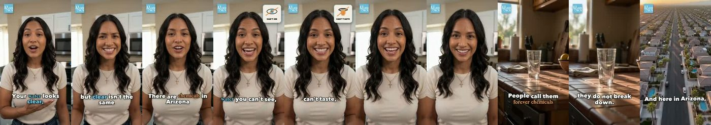

Un presentador que no existe.
Una prueba que sí existe.
Una cita por comentario.
No es un anuncio: son piezas de contenido que se distribuyen mejor. Cómo un negocio local produce las suyas con avatar IA en una tarde — el sistema completo, de la plantilla a la cita agendada, con Claude produciendo de inicio a fin. Sin actores, sin cámara, sin locación.
Dos piezas reales. Cero tomas grabadas.
Un negocio local de purificación de agua en Arizona. A la izquierda, el UGC con avatar: camina, habla, abre la llave, y la voz nació dentro de la toma. En medio, la misma toma en crudo, antes de mi capa. A la derecha, la pieza cinemática con narrador — que no es UGC, y por eso importa.
Claude produce de inicio a fin. Estas son sus manos.
El Content OS está conectado a Higgsfield y a kie.ai para generar, usa HyperFrames para renderizar la capa, y AssemblyAI y Zernio para oír y distribuir. Nada corre en una app suelta: todo pasa por el mismo chat.


¿Cómo un brief se convierte en un anuncio con cita?
Esta máquina. Arriba entra el negocio: qué demuestra, dónde y con qué palabras. Abajo sale un anuncio con avatar, publicado, con la automatización que convierte el comentario en cita. Siete capas. Tú decides en dos; el sistema corre el resto.

¿Qué hace una productora de UGC… cuando no hay productora?
Las mismas decisiones que tomaría un equipo de casting, locación, guion, dirección, edición y media buying. Solo que cada una es una skill.
CASTING → plantilla
Una hoja de 4 vistas en fondo blanco. La misma persona en la cocina, en la cochera y en el cierre. Sin ella, cada toma es otra mujer.
BRIEF → producto + idea
Qué demostramos (la prueba gratis de 15 minutos), la idea ("tu agua te dice la verdad si alguien le pregunta") y la analogía que se repite.
LOCACIÓN → territorio
La cocina real del negocio, editada desde la plantilla. Los objetos viven donde viven: el equipo nunca aparece en la cocina.
GUION → diálogo UGC
Hook de 5 palabras, reframe, mecanismo con analogía, payoff, CTA suave. Tres opciones, eliges una, se parte en tomas de 20s.
DIRECCIÓN → tomas
Un prompt por toma: estado inicial, timeline con el diálogo entre comillas, cámara = su teléfono, espacio con exclusiones, audio sin música, estado final = puente.
EDICIÓN + MEDIA → capa y cita
Evidencia real cortada en la palabra exacta del transcript, chips de marca, máster; y el CTA que dispara comentario → DM → agente → cita.
Un sistema. Brief adentro, cita afuera.
Esto es el Content OS: cada estación es una skill y las skills se encadenan. Todo corre en un solo chat, de punta a punta, hasta que el anuncio está publicado y la automatización está viva.
EL BRIEF
- marca, producto, leyes de vocabulario
- qué se puede decir y qué no ("gratis" solo la prueba)
- tu única tarea obligatoria
AVATAR FACTORY
- plantilla de 4 vistas (Nano Banana Pro)
- territorio editado desde la plantilla
- 3 guiones → 1 → tomas de 20s
- Seedance 2.5 con voz nativa, sin música
EDICIÓN
- transcript palabra a palabra de la voz generada
- b-roll real anclado a la palabra
- chips, end card, cama baja, SFX escasos
- máster −14 LUFS
DISTRIBUCIÓN
- calendario 2/día, programado
- comment-to-DM con la palabra del CTA
- agente de booking: ciudad, hora, nombre, teléfono
PUBLICADO. LA CITA LLEGA SOLA.
- de punta a punta, mismo chat
- reporte cada 2 semanas
- la misma cadena para el siguiente negocio
La skill corre el Método PLANTILLA — siete pasos.
No vamos a profundizar en la tecnología; ya se entiende. El punto es la visión: un negocio local con un presentador propio, piezas cada semana y una máquina de citas. Lo profundo vive en el video y en la comunidad.
Mírame correrlo desde cero.
Un brief, de principio a fin, enseñando el resultado en cada paso. Cada flecha puede correr sola; yo mantengo las compuertas, por ahora — esa parte es honesta.


Ella cuando ella vende. Evidencia cuando la palabra la pide.
Los cortes no se ponen "más o menos": se buscan en el transcript, palabra por palabra. Sin placa de hook, sin zooms, sin sobre-edición. Y el b-roll sale de toda la librería, no solo del material crudo del negocio.

Una librería, cortada en la palabra.
Stock cinematográfico + inserts generados + las pocas tomas del negocio que son prueba real. La regla: menos material crudo, más apoyo que demuestra lo que se dice.

El vaso llenándose"sin color, sin olor"
Bajo la llave"tu propia llave"
La pieza cinemática1 generación, sin personas
El donante originallo que había antesOtros avatares, otros negocios.
Ejemplos reales publicados en X en las últimas semanas: UGC con avatar, presentadores IA y demos de los propios fabricantes. Cada tarjeta abre la publicación original.
Split-screen 15s: mujer en un carro estacionado, teléfono en mano, hablando a cámara — la misma escena en 2.5 y en 2.0. El selfie en el carro es la forma de UGC más reconocible.
Reseña UGC de 15s con voz nativa: mujer en una recámara de Nueva York desempaca unos lentes y los reseña. Publicó el prompt completo (identidad por imagen de referencia + producto bloqueado).
Artículo + videos de 30s: selfie cerrado en una cocina hablando sobre el café, y una mujer sirviendo aceite de oliva mientras habla a cámara. Dice el costo: $6.93 por generación de 30s. Tip: pedir temblor, encuadre que deriva, foco que busca, luz desigual.
Artículo 'cómo crear UGC hiperrealista con Seedance 2.5 (flujo completo)': tres cabezas parlantes UGC (corredor con lentes, chica con capucha, adolescente) y un hook POV caminando estilo TikTok.
Recorrido de 3:42 de una 'fábrica de UGC con IA': investigación → guion → personaje → producto → escenas → anuncio de 30s. Cuadrícula de ~12 spots terminados: bloqueador solar en el baño, detergente, suplemento de gym, skincare, cocina.
Segunda demo del mismo hilo: mujer con sudadera gris, selfie a brazo extendido en la sala, hablando y sonriendo (2.5) contra la toma borrosa de 2.0.
20s: mujer con suéter crema, selfie en la recámara con un frasco de skincare en la mano, hablando; más un clip cómico de un guardia de supermercado.
15s: Pieter Levels se genera a SÍ MISMO desde unas pocas fotos de referencia — retrato de estudio a media luz y cuerpo entero con brazos cruzados. Avatar de marca personal, sin producto.
Clip vertical de 30s (la demo de selfie con sudadera de Higgsfield) pegado a un playbook de 5 pasos para 'tus primeros $5k con anuncios UGC de IA': portafolio de testimonial / unboxing / demo, pitch a ecommerce pequeño y suplementos.
Artículo 'cómo promptear Seedance 2.5' + video de 25s: un anuncio conceptual de carreras con marca (hangar ilustrado, close-up de llanta) y capturas de la estructura del prompt. Oficio de anuncio cinemático, no avatar.
Reel de lanzamiento de 67s: '33 días de Seedance 2.5 ilimitado — en vivo en Higgsfield'. Showcase general del modelo (motocicleta en carretera), no una demo de avatar UGC.
14s: una skill de Claude Code que saca el creador IA, el guion, la lista de tomas y el anuncio UGC terminado desde un producto y un prompt. Fuera de la ventana de 30 días; está aquí porque es la misma idea que esta página.
Un prompt por paso. Rellena los corchetes.
Estas son las plantillas exactas del método, con las variables entre [ ]. Las de Higgsfield se pegan tal cual en Nano Banana Pro o Seedance 2.5; las de Claude Code asumen el Content OS instalado (la skill ugc-avatar-factory corre el paso). El último entrena tu OS para que lo haga solo.
PLANTILLA — la persona, fijada una vez
Character reference sheet on a seamless pure white studio background, four views of the EXACT same person, identical in every panel, evenly lit with soft shadowless studio light, photorealistic, sharp, no text, no labels, no props. The person: [CHARACTER LOCK — edad, origen, complexión, pelo (color y peinado), piel natural sin retoque con poros visibles, ojos, accesorios o ninguno]. Uniform: [uniforme exacto — p. ej. plain navy polo shirt with the brand logo embroidered small on the left chest (as in @Image1), charcoal work trousers, black work shoes]. Natural unretouched skin, no heavy makeup, calm confident expression. Panel 1 (left): full body, standing, facing the camera, arms relaxed at the sides. Panel 2 (center-left): full body from behind, same stance. Panel 3 (center-right): full body in profile, facing left. Panel 4 (right): tight close-up of the face and shoulders, looking straight into the lens, soft genuine smile, every skin detail visible. Same proportions across panels, feet visible in the full-body panels, consistent lighting and white balance, editorial catalog look. — — — CHARACTER LOCK (se escribe UNA vez y se pega igual, palabra por palabra, en cada toma): the person from @Image1: [edad]-year-old [origen] [rol], [pelo], [piel — natural, unretouched, visible pores], [ojos], [accesorios o none], wearing [uniforme exacto], [calzado]. Do not change the face, the hair or the clothes.
IDEA — qué demostramos y la frase que la gente repite
Corre /ugc-avatar-factory, paso IDEA. Esto es contenido, no un anuncio: la pieza tiene que educar y demostrar algo real; la venta vive en el comentario. Negocio: [nombre] — [qué hace, en una frase]. Lo que se puede demostrar en casa del cliente: [la prueba / el antes-después / el proceso visible]. A quién le hablamos: [la persona exacta y la frustración que trae]. Lo que ya probaron y no les funcionó: [alternativas fallidas]. Leyes de vocabulario: [palabras prohibidas · palabras obligatorias · qué puede llamarse "gratis" · claims vetados (médicos, precios, garantías)]. Devuélveme 3 ideas, cada una con: 1. QUÉ DEMOSTRAMOS — una frase, visible en cámara. 2. EL REFRAME — con el patrón universal: "La mayoría cree que ___ es un problema de [superficie] y sigue [conducta superficial]. Pero es un problema [estructural], por eso [la solución superficial] no llega." 3. LA ANALOGÍA TÁCTIL — un segundo, algo que se pueda ver: "piénsalo menos como ___ y más como ___". Es la línea más importante: lo que el espectador repite después. 4. EL DOLOR — superficie o profundo (visibilidad pública · impuesto mental · tiempo · "ya arreglé todo lo demás" · intimidad · reconocimiento), y por qué es de deseo masivo. 5. LA PALABRA DEL CTA — una sola, para comentar (p. ej. AGUA), y qué pasa después. Reglas: mecanismo que entienda un niño de 12 años; nada inventado sobre el negocio; si te falta un dato, pregúntamelo, no lo rellenes.
PRODUCTO — las variables de marca y el board
Corre /ugc-avatar-factory, paso PRODUCTO. Arma la ficha de marca y el board de imágenes que van a usar TODOS los pasos siguientes. No inventes ningún valor: lo que no sepas, pregúntamelo. FICHA (variables de marca — §10 del sistema de guion): - Marca, escritura exacta y si se dice en voz: [ ] · pronunciación si se dice: [ ] - Producto / servicio, escritura exacta y categoría: [ ] - Mecanismo en lenguaje llano (12 años): [ ] - Analogía táctil: "piénsalo menos como ___ y más como ___": [ ] - Alternativas fallidas que el público ya probó: [ ] - Avatar objetivo (demografía + dolor exacto): [ ] - Dolores profundos para ángulos posteriores: [ ] - Espacio y luz preferidos: [ ] (por defecto: casa real, vivida) - Imagen(es) de referencia del producto → @Asset: [ruta] - Palabras que el modelo pronuncia mal en esta categoría: [ ] - Leyes de vocabulario del negocio (prohibidas / obligatorias / "gratis" / claims): [ ] BOARD: reúne en una carpeta las imágenes del producto, del uniforme (para el bordado de la plantilla) y del espacio real donde se demuestra. Nómbralas 01-…, 02-…, y dime cuál será @Asset (producto) y cuál @Image2 (espacio). REGLAS DE APARICIÓN: el producto solo se referencia (@Asset) en la toma donde el guion lo nombra — sin referencia, el modelo no lo pinta. Anota en la ficha en qué beat aparece. Entrega: la ficha completa en un archivo brand-variables.md dentro del proyecto y la lista del board con roles (@Image1 plantilla · @Image2 espacio · @Asset producto).
TERRITORIO — el espacio real, editado desde la plantilla
Keep this exact same person from @Image1: identical face, identical skin, identical
[peinado], identical [uniforme con el bordado]. Do not change the face or the clothes.
Change ONLY the location: [she/he] is now standing in [el espacio real — p. ej. a bright
real home kitchen like @Image2, light wood cabinets, a window with soft daylight behind
the sink, a glass of water on the counter]. Vertical 9:16, selfie-style framing at
arm's length, head and shoulders with space above the head, handheld phone realism with
mild sensor noise, iPhone HDR look, no phone frame, no text, no logos except the one on
the uniform.
EXCLUDE: [lo que NO vive en este espacio — p. ej. garage, concrete floor, tanks, water
heater, badge, lanyard, other people].
— — —
Reglas del territorio:
- Máximo 2 espacios por pieza. Cada beat declara su espacio y EXCLUYE el otro.
- Los objetos viven donde viven: el equipo en la cochera, nunca en la cocina.
- Se cambia de espacio con un corte declarado ("hard cut to…"), nunca haciendo aparecer
cosas.
- El resultado de este prompt es el FRAME INICIAL de la toma 1 (@Image2 en las tomas).DIÁLOGO — 3 guiones UGC, eliges 1, se parte en tomas
Corre /ugc-avatar-factory, paso DIÁLOGO. Usa el UGC Script Writing System v2 (lo tienes
en la skill: reference/ugc-script-system-v2.md) con la ficha brand-variables.md y la idea
elegida.
Escríbeme 3 guiones distintos, cada uno con una VARIACIÓN y un HOOK FRAMEWORK distintos
(Confesional · Lo probé por ti · Rompe-mitos · Descubrimiento accidental), formato Full
Stack: 28–32 segundos, 150–180 palabras, 5 beats:
1. HOOK (0–3s) — las primeras 5 palabras nombran a la persona y su frustración. Nunca
narra la vida de quien habla.
2. REFRAME (3–10s) — patrón universal superficie vs estructura.
3. MECANISMO + ANALOGÍA (10–20s) — el producto se nombra aquí por primera vez; la
analogía táctil intacta.
4. PAYOFF (20–25s) — sensorial y específico, lo que se ve y se siente después.
5. CTA suave (25–30s) — "comenta [PALABRA] y te ___". Nunca "toca el link".
Reglas de voz: frases que fluyen (cero fragmentos de dos palabras) · sin em dashes ni
negritas en la voz · mecanismo que entienda un niño de 12 años · sin pares fonéticos que
el modelo confunda (venda/venga) ni palabras que sustituye (carro → capó) · vocabulario
del negocio dentro del guion ("gratis" solo lo que es gratis; sin precios; sin claims).
Idioma: [español neutro latino / inglés].
Cuando elija uno, pártelo para Seedance 2.5 (30s por generación): 2 tomas — toma 1 =
hook + reframe (0–15s), toma 2 = mecanismo + payoff + CTA (15–30s) — con bookend (la
primera y la última toma comparten encuadre y espacio) y marca en qué toma se referencia
@Asset.TOMAS — un prompt por toma, la voz nace dentro
FORMAT: vertical 9:16, [15|20|30] seconds, one continuous handheld take, photoreal self-filmed UGC look, iPhone HDR look, [Spanish (Latin American, neutral accent) | English] speech generated natively. REFERENCE ROLES: @Image1 = the exact person (identity lock below). @Image2 = the space and the starting frame. [@Asset = the product — ONLY in the chunk where the script names it.] CHARACTER LOCK: [pegar palabra por palabra el character lock de la plantilla] STARTING STATE: [toma 1: first frame of the video = @Image2: she stands in …, head and shoulders in frame, looking straight into the lens, about to speak | toma 2: exactly the ending frame of chunk 1: same space, same framing, …]. TIMELINE: 0–[a]s: [acción + encuadre — p. ej. she starts walking slowly toward the sink, phone at arm's length, a small open-palm gesture on "…"]. She says, in [idioma], like telling a friend: "[línea 1]" [a]–[b]s: [acción — p. ej. she stops at the counter, the light changes as she passes the window, depth of field shifts to her face]. She continues: "[línea 2]" [b]–[end]s: [acción — p. ej. she opens the tap, glances at the water and back to the lens, slows down on the last words]. She closes: "[línea 3]" CAMERA: her own phone held at arm's length, walking selfie, natural handheld micro-jitter, realistic changes in lighting and depth of field as she moves through the space, eye contact with the lens on the key words. UGC REALISM: she gestures naturally with the free hand, shifts weight, touches [hair/ face] when relevant, never frozen; energy "te quiero contar algo", not a commercial. SPACE: [territorio declarado] only. EXCLUDE: [lo que no vive aquí], other people, any on-screen text. STATE RULE: she and the space show the AFTER — clean, cared for; the problem is shown later in b-roll, never on her. AUDIO: her voice clear and close, room tone of the space, [un detalle ambiental — a faint refrigerator hum], NO music, no sound effects, no other voices. ENDING STATE: [último frame exacto — alimenta la siguiente toma / iguala el primer frame de la toma 1 para el bookend]. CONSTRAINTS: no on-screen text, no subtitles, no logos except on the uniform, no extra people, no slow motion, [producto] not visible unless referenced. — — — Toma 2 = EXTENSIÓN de la toma 1 (video_extension · forward · la toma 1 como referencia): misma voz, mismo espacio, continuidad real. Nunca generes música: la cama es de edición.
EDICIÓN — ella cuando ella vende, evidencia en la palabra
Corre /ugc-avatar-factory, paso EDICIÓN, sobre las tomas [rutas de la toma 1 y toma 2].
1. TRANSCRIBE la voz generada con AssemblyAI (Universal-3 Pro), palabra por palabra con
milisegundos. Compárala con el guion: si el modelo cambió una palabra, dímelo y
propón la costura (frase de otra toma + b-roll encima, labios fuera de cámara).
2. PLAN DE B-ROLL anclado a la PALABRA, no "más o menos": para cada palabra que pide
evidencia ("[turbia]" → [fregadero turbio], "[en Arizona]" → [skyline], "[sin color /
olor / sabor]" → [vaso + chips]…), busca primero en NUESTRA librería (footage propio
del negocio = prueba real; stock cinematográfico; inserts generados con Nano Banana
Pro / kie.ai solo si no existe lo real y siempre alineado a marca). Regla: menos
material crudo del negocio, más apoyo que demuestra lo que se dice. Ella en cámara
cuando ella vende.
3. LA CAPA: captions karaoke de una línea (fuente y color de la guía de marca), chips
de marca para las listas ("no se ve · no huele · no sabe"), marca de agua, end card
con la palabra del CTA, SFX escasos de nuestra librería de sonidos (J-cut, whoosh
solo en el end card), cama musical de nuestra librería debajo de la voz (sidechain),
máster −14 LUFS, picos ≤ −1.5. NADA de placa de hook, nada de zooms ni pops, nada
de sobre-edición.
4. QA antes de enseñármelo: scrub de un frame por segundo de toda la línea de tiempo,
transcript del máster = guion, fronteras de b-roll en la palabra correcta, end card
presente, loudness medido.
5. Entrégame el máster nombrado con versión (v1, v2… nunca sobrescribas), el mapa de
cortes (palabra → clip → tiempo) y lo que cambiarías si te pido un 100.ENTRENAMIENTO DEL OS — para que tu sistema lo corra solo, de brief a cita
Vas a entrenar mi Content OS para producir piezas UGC con avatar de inicio a fin. 1. Guarda el "UGC Script Writing System v2" completo (secciones 1–15, texto íntegro que te pego abajo) en .claude/skills/ugc-avatar-factory/reference/ugc-script-system-v2.md y úsalo como system prompt del paso DIÁLOGO y como checklist de auditoría (§9 fallos + §2 principios) antes de aprobar cualquier guion. 2. Escribe mis variables de marca (§10) en content-production/brand-profile.md y haz que TODOS los pasos las lean: nombre y pronunciación, producto, mecanismo, analogía, alternativas fallidas, avatar, dolores, espacio y luz, @Asset, palabras mal pronunciadas, leyes de vocabulario. 3. Fija el ESTÁNDAR como reglas que no puedes saltarte: la plantilla manda · nada de placa de hook · ella cuando ella vende · guion a prueba de modelo · extensión antes que frame puente · nunca música generada · vocabulario del negocio dentro del guion · el CTA vive en el comentario. 4. Conecta las herramientas y confirma que responden: Higgsfield (Nano Banana Pro para plantilla y territorio; Seedance 2.5 para tomas con voz nativa), kie.ai (imágenes e inserts por API), HyperFrames (render de la capa: captions, chips, end card), AssemblyAI (transcript por palabra), Zernio (calendario 2/día, comment-to-DM con la palabra del CTA, agente de booking). Dime qué llave falta en .env. 5. Registra NUESTRA librería: carpetas de footage propio, sonidos, música y imágenes (índice con qué muestra cada clip) para que el paso EDICIÓN busque ahí primero. 6. Define las compuertas: yo decido en IDEA (1 de 3), DIÁLOGO (1 de 3), la TOMA 1 y el pase al máster. Todo lo demás corre solo. Cuando termine una pieza, me enseñas el máster versionado, el transcript y el calendario propuesto. Cuando esté listo, corre una pieza de prueba con este brief: [brief de 5 líneas]. — — — pega aquí el UGC Script Writing System v2 (está íntegro en esta página) — — —
El Sistema de Guion UGC v2, íntegro.
Es el framework que el paso DIÁLOGO usa como system prompt y como checklist de auditoría. Está aquí completo, traducido al español sin reducir nada, para que lo pegues en tu OS con el prompt 07. Abre cada capítulo — o llévatelo como recurso.
SISTEMA DE ESCRITURA DE GUIONES UGC — VERSIÓN 2
Framework universal para guiones UGC generados con IA
Agnóstico de nicho • Agnóstico de marca • Listo para producción
Construido para herramientas de generación de video con IA y flujos de producción por tomas (chunks)
Traducción íntegra al español del "Universal UGC Script Writing System v2" — todo el contenido, sin reducir. El original en inglés se descarga al final junto con esta versión.
Contenido
- Los dos formatos de guion
- Principios no negociables
- La estructura universal del guion
- Bloques de dirección universales
- Arquitectura de la voz
- Tipos de variación
- Selección del punto de dolor
- Estándares de cámara y b-roll
- Fallos comunes
- Variables de marca
- Flujo de producción por tomas
- Plantillas de desglose por duración de guion
- Captions para alcance orgánico
- Lógica de testeo y escalado
- Cómo usar este documento
1. Los dos formatos de guion
El sistema produce dos formatos. Elige el que corresponde a la etapa del funnel.
| Atributo | Formato Full Stack | Mid-Funnel Punchy |
|---|---|---|
| Duración | 28–32 segundos | 18–22 segundos |
| Cantidad de palabras | 150–180 palabras | 55–70 palabras |
| Estructura de beats | Cinco beats: hook, reframe, mecanismo, payoff, CTA | Tres beats: hook afilado con el reframe plegado adentro, mecanismo con analogía, payoff suave con cierre |
| Escenas por defecto | 3 escenas | 2 escenas (3 solo si la voz lo exige) |
| Tomas por defecto (flujo por chunks) | 5 tomas | 3 tomas |
| Úsalo para | Audiencias frías que necesitan el arco educativo completo para convertir | Audiencias más tibias que ya saben que tienen el problema y necesitan una señal de credibilidad rápida |
2. Principios no negociables
Estas reglas aplican a todo guion, todo formato, todo nicho. No son preferencias. Son el conjunto de reglas que separa un guion UGC ganador de uno perdedor.
2.1 El hook es dueño de las primeras cinco palabras
La línea de apertura identifica a la persona exacta a la que se le habla y confirma la frustración específica que carga. Nunca narra la mañana, el fin de semana ni la vida del creador. Llama a la persona correcta y repele a todos los demás.
2.2 Frases que fluyen, no fraseo entrecortado
Nada de patrones tartamudos de dos palabras. Las frases se conectan, respiran y llevan una a la otra. Usa conectores y pensamientos completos.
2.3 Mantén el mecanismo simple
Nombra el mecanismo propietario como lo nombra la marca, pero solo si un niño de 12 años lo entendería. Acompaña SIEMPRE el mecanismo con una analogía táctil de un segundo que el espectador pueda visualizar. La analogía es la frase más importante de todo el guion: es lo que el espectador le repite después a un amigo.
2.4 Los CTA suaves rinden más que la venta directa
La fórmula bloqueada de la competencia funciona para tráfico frío, pero suena a anuncio para audiencias más tibias. Por defecto, cierres estilo sugerencia.
2.5 Sin guiones largos en la voz. Sin negritas en la voz.
Los guiones largos (em dashes) rompen el ritmo natural del habla al leerse en voz alta. Las negritas no tienen función en audio. Usa comas, puntos y conectores cortos.
2.6 Evita palabras que las voces de IA pronuncian mal
Ofensores comunes: colágeno, hialurónico, niacinamida, queratosis, nombres de marca con escritura no estándar. O reemplázalas por alternativas en lenguaje llano, o incluye una nota fonética de pronunciación encima de la voz. Ante la duda, cambia la palabra.
2.7 Candado de pronunciación de la marca (cuando la marca se dice)
Si el nombre de la marca aparece en la voz, incluye un bloque de pronunciación: escritura exacta, fonética de diccionario y la instrucción de que no se permiten atajos ni variaciones. Si la marca se sigue pronunciando mal aun con la fonética, elimina las menciones de la marca de la voz.
2.2 Ejemplo: frases que fluyen
2.4 Banco de CTA suaves
- "Te dejo abajo el link del que estoy usando."
- "Te dejo un link abajo por si quieres verlo."
- "Dejo el link abajo para que no tengas que buscarlo."
- "Dejo un link en los comentarios / en la bio para que lo revises tú mismo."
3. La estructura universal del guion
Toda salida de guion sigue el mismo esqueleto. Las variables se rellenan. Las secciones nunca se reordenan. Sin meta-comentarios sobre el proceso.
3.1 Esqueleto de producción estándar
Úsalo cuando generas un video como un solo prompt continuo.
Crea un anuncio [ESTILO] para [CATEGORÍA DE PRODUCTO]. El creador es [GÉNERO] de [RANGO DE EDAD], [VIBRA — 2 a 3 palabras], [DESCRIPCIÓN DEL PELO], vistiendo [OUTFIT]. Look natural, [NIVEL DE MAQUILLAJE]. Está en [ESPACIO CON ILUMINACIÓN]. [BLOQUE DE DIRECCIÓN DE PIEL] [BLOQUE DE DIRECCIÓN DE APLICACIÓN] @Image 1 es el producto, [NOMBRE DEL PRODUCTO — qué es]. Úsala como referencia de cómo se ve [TIPO DE EMPAQUE] al sostenerse o usarse, no como imagen estática. [BLOQUE DE SECUENCIA DE B-ROLL] [BLOQUE DE REALISMO UGC] Estilo de cámara: [DIRECCIÓN DE CÁMARA]. [DIRECCIÓN DE B-ROLL CON APERTURA EXPLÍCITA SIN PRODUCTO] [NOTA DE CANTIDAD DE ESCENAS Y RITMO] Este es el guion completo: "[GUION DE VOZ]"
3.2 Esqueleto de producción por tomas
Úsalo cuando generas clips por tomas para coserlos en post, usando el mismo modelo y el mismo personaje a través de varias generaciones. La sección 12 tiene las plantillas completas de desglose.
[CHARACTER LOCK — se pega en cada toma] [BLOQUES DE DIRECCIÓN UNIVERSALES — se pegan en cada toma] • Bloque de dirección de piel • Bloque de dirección de aplicación • Bloque de secuencia de b-roll • Bloque de realismo UGC [DESGLOSE TOMA POR TOMA] Por cada línea de la voz: • Número de línea y texto exacto de la voz • Duración estimada en segundos • Dirección visual específica de la escena • Notas de continuidad • Si @[asset del producto] se incluye o no
4. Bloques de dirección universales
Estos cuatro bloques fijan la calidad de producción y previenen los fallos de generación más comunes. Pégalos en cada guion. Adapta las variables al producto específico.
4.1 Bloque de dirección de piel
Evita que la IA genere la condición del "antes" en el creador en tiempo presente, que se supone muestra el resultado.
Adaptación a otras categorías
- Pelo: "La creadora tiene pelo naturalmente hermoso, sano y abundante, sin [caída/quiebre/frizz] visible en ningún momento."
- Dientes: "La creadora tiene dientes naturalmente brillantes, blancos y sanos, sin [manchas/amarillo] visibles en ningún momento."
- Hogar/limpieza: "La casa de la creadora está limpia, habitada y hermosa — sin [manchas/desorden/daños] visibles en ningún momento."
Principio: fija visualmente al creador en la condición del DESPUÉS hacia la cual se le está mostrando el camino al espectador.
4.2 Bloque de dirección de aplicación
Evita que la IA genere el producto como una marca mate o pigmentada visible cuando debería ser invisible, transparente o comportarse distinto.
Principio: nombra el modo de fallo al que la IA tiende y anúlalo con descripción positiva más una regla visual clara.
4.3 Bloque de secuencia de b-roll
Evita que la IA muestre el producto antes de que la voz se lo gane, lo que mata el hook al poner al espectador en modo "esto es un anuncio" demasiado pronto.
Principio: amarra la visibilidad del producto a una palabra específica de la voz, no a un tiempo vago. En producción por tomas, simplemente omite la referencia @[asset del producto] en los prompts donde el producto no debe aparecer — es un candado duro que la IA no puede saltarse.
4.4 Bloque de realismo UGC
Evita que la IA genere tomas posadas, congeladas, con sensación de comercial. Fuerza el lenguaje corporal natural de alguien que se graba a sí mismo casualmente.
Principio: nombra el modo de fallo (pose congelada, manos en bolsillos) y reemplázalo con conductas naturales específicas.
5. Arquitectura de la voz
5.1 Estructura Full Stack de cinco beats
| Beat | Tiempo | Función |
|---|---|---|
| 1. Hook | 0:00–0:03 | Llama a la persona exacta, confirma la frustración específica. Dos frases. |
| 2. Reframe del problema | 0:03–0:10 | Revela el mecanismo oculto detrás de por qué los intentos anteriores del espectador fallaron. Lo reorienta de "lo estoy haciendo mal" a "me dieron las herramientas equivocadas". |
| 3. Mecanismo + analogía | 0:10–0:20 | Introduce el producto, explica el mecanismo en lenguaje llano con una analogía táctil de un segundo. |
| 4. Payoff | 0:20–0:25 | Experiencia vivida, sensorial y específica después del producto. Visual e inmediata, no beneficios abstractos. |
| 5. CTA | 0:25–0:30 | Cierre suave estilo sugerencia. |
5.2 Estructura Mid-Funnel de tres beats
| Beat | Tiempo | Función |
|---|---|---|
| 1. Hook afilado con el reframe plegado | 0:00–0:06 | Una frase que llama a la audiencia y descarta la suposición equivocada en el mismo aliento. |
| 2. Mecanismo con analogía | 0:06–0:16 | Mecanismo comprimido más la analogía táctil. La analogía se mantiene intacta a toda costa. |
| 3. Payoff suave y cierre | 0:16–0:21 | Un beat sensorial más el CTA estilo sugerencia. |
5.3 Frameworks de hook
Toma de esta lista. Rota entre guiones para prevenir fatiga.
- Si estás intentando ___, así es como por fin lo logras sin ___.
- Tu ___ está ___, y ___ no lo va a arreglar.
- El mito más grande sobre ___ es...
- Probé ___ para que tú no tengas que hacerlo.
- Ojalá alguien me hubiera dicho esto antes de empezar ___.
- Descubrí esto por accidente mientras ___.
- Lo que nadie te advierte sobre ___ es...
- Por qué ___ funciona cuando nada más funciona.
- Por qué tu ___ no está funcionando y cómo arreglarlo.
- No cometas este error con ___.
- Una cosa que nunca volveré a hacer en ___.
- Tres errores que te tienen atorado en ___.
- Esta única cosa lo cambió todo para mí en ___.
- Lo que nadie admite sobre ___ es...
- Cómo dejé de ___.
- La verdad detrás de mi ___.
- Si pudiera regresar y decirme una sola cosa sobre ___.
5.4 El patrón universal de reframe
A través de los nichos, los reframes más fuertes siguen esta forma:
Funciona porque absuelve al espectador de la culpa por los fracasos pasados y prepara la revelación del mecanismo. Adapta el encuadre estructura-vs-superficie a lo que sea que el producto resuelve.
6. Tipos de variación
La misma estructura de guion soporta varios registros emocionales. Rótalos a lo largo de la campaña.
| Tipo | Voz | Mejor para |
|---|---|---|
| El confesional | Primera persona, tiempo presente, incluye una admisión personal | Categorías emocionales como belleza, bienestar, crianza |
| Lo probé para que tú no tengas que hacerlo | Sustituto de la audiencia que probó primero todas las soluciones equivocadas | Categorías saturadas donde la audiencia ya probó varios productos de la competencia |
| El rompe-mitos | Abre con un reframe correctivo | Categorías educativas donde la audiencia absorbió información equivocada |
| El descubrimiento accidental | El creador se topó con el insight | El encuadre de menor presión de venta — posiciona al creador como explorador igual que tú |
| El infomercial animado | Sin creador, puro b-roll del producto con voz en off | Escalar producción sin contratar talento, o cuando el producto es el héroe |
7. Selección del punto de dolor
Los primeros guiones de cualquier campaña deben apuntar a la queja de superficie (el síntoma visible). Cuando esos ya corren, expande hacia dolores más profundos. Los dolores de deseo masivo rinden más que los de nicho.
7.1 Quejas de superficie
El síntoma literal y visible del problema. Punto de entrada fácil pero saturado.
7.2 Dolores profundos
Ángulos de alto apalancamiento que van más allá del síntoma de superficie.
- El dolor de la visibilidad pública — ser visto en luz que no perdona (fotos, videollamadas, luz de día)
- El impuesto mental — el trabajo diario de vivir esquivando el problema
- El dolor de la edad o del tiempo — cargar el problema por años/décadas, el duelo extraño de lo que no se resuelve
- El dolor de "ya arreglé todo lo demás" — la frustración existencial de quien resuelve problemas y este es el único que no cede
- El dolor de la intimidad y el close-up — cómo se siente el problema en momentos privados, con gente que mira de cerca
- El dolor del reconocimiento — no reconocerte, la brecha entre cómo te sientes y cómo te ves
7.3 Filtro de deseo masivo
Los mejores dolores cruzan edad, género, profesión y estilo de vida. Prueba su universalidad. Si el dolor solo aplica a oficinistas, padres o una demografía específica, estrecha el alcance. Si casi cualquiera con el problema lo ha sentido, es de deseo masivo.
8. Estándares de cámara y b-roll
8.1 Regla de movimiento constante
Toda toma tiene movimiento. Nada de fotografía de producto fija. Nada de cabezas parlantes estáticas. Lo hablado a cámara usa temblor natural de mano. Las tomas con manos libres usan una deriva sutil o micro-push-ins. El b-roll usa tracking, empujes de dolly, órbitas, reveals o movimiento de mano.
8.2 Sincronía visual-voz
Cada visual coincide con lo que el narrador dice en ese momento exacto. Cuando el narrador dice "refrigerador", muestra un refrigerador. Cuando describe el mecanismo, muestra el mecanismo. Los visuales siguen la voz palabra por palabra.
8.3 Cortes continuos — los cortes se motivan, no decoran
Los cortes suceden cuando:
- El creador se mueve físicamente a un lugar nuevo a hacer algo
- La voz nombra el producto (corte al reveal del producto)
- Sucede una acción específica que el guion pide
Los cortes NO suceden por:
- Tomas decorativas del entorno: muebles, arte o diseño de interiores
- "Respiros visuales" sin relación con lo que se dice
- Momentos estéticos que existen por razones de cinematografía
8.4 Ritmo dentro de las escenas
Las escenas corren a velocidad normal. Sin cámara lenta. Sin material acelerado. Dentro de cada escena, los micro-cortes pueden ser rápidos en beats de alta energía y un poco más lentos en beats emocionales o explicativos.
8.5 Disciplina de cantidad de escenas
- Formato mid-funnel: 2 escenas por defecto, 3 solo si la voz lo exige
- Formato full stack: 3 escenas por defecto
- Infomercial animado: la IA determina los cortes según los beats de la voz
8.6 Variación de espacios a lo largo de la campaña
Rota entornos e iluminaciones entre guiones para que la audiencia no vea el mismo fondo en repetición. Opciones: cocina cálida y tenue de noche, mañana inundada de sol, ventana lateral suave de tarde, estudio de producto frío y clínico, cocina familiar habitada, tocador de recámara con sol, patio trasero con luz exterior, baño cálido de noche. Amarra cada variación al registro emocional de ese guion.
8.7 Variación demográfica a lo largo de la campaña
Rota la demografía de los creadores para que el algoritmo tenga señal de qué segmentos responden. Distribución estándar: edades 19-23, 24-32, 32-38, 35-45, más un equivalente masculino en al menos una variación. Cada demografía carga puntos de presión emocional distintos.
9. Fallos comunes
Son fallos recurrentes de la generación con IA. Auto-corrígete contra ellos en cada salida.
10. Variables de marca
Antes de producir cualquier guion, reúne estas o pídelas. No inventes valores.
| Variable | Estatus | Notas |
|---|---|---|
| Nombre de la marca y escritura exacta | Requerido | |
| Pronunciación de la marca (fonética de diccionario) | Requerido si se dice | |
| Si el nombre de la marca se dice en la voz | Requerido | |
| Nombre del producto y escritura exacta | Requerido | |
| Pronunciación del producto | Requerido si se dice | |
| Categoría del producto | Requerido | |
| Mecanismo central en lenguaje llano | Requerido | Debe entenderlo un niño de 12 años |
| Analogía táctil del mecanismo | Requerido | Formato: "Piénsalo menos como ___ y más como ___" |
| Alternativas fallidas que la audiencia ya probó | Requerido | |
| Demografía del avatar objetivo | Requerido | |
| Dolores específicos más allá de la queja de superficie | Requerido para ángulos profundos | |
| Preferencias de espacio e iluminación | Opcional | Por defecto: entorno de casa habitada |
| Imagen de referencia del producto | Requerido | Úsala como @Image 1 o @[asset del producto] |
| Palabras que la IA pronuncia mal en esta categoría | Opcional | Márcalas por adelantado para cambiarlas |
11. Flujo de producción por tomas
Para proyectos donde el mismo creador y el mismo espacio se usan a través de varios clips generados que se cosen en post.
11.1 Fija el personaje una vez
Escribe una descripción detallada del personaje que se pega tal cual en cada toma. Incluye rango de edad, energía, color y estilo de pelo, tono de piel, ojos, accesorios, outfit específico, y el departamento o espacio donde está.
11.2 Fija los bloques de dirección universales
Dirección de piel, dirección de aplicación, secuencia de b-roll y realismo UGC se pegan tal cual en cada toma.
11.3 Parte la voz en líneas
Cada línea de la voz se vuelve una toma. Cantidades por defecto:
- Mid-funnel (18-22 seg): 3 tomas
- Full stack (28-32 seg): 5 tomas
La sección 12 contiene las plantillas completas de desglose para ambos formatos.
11.4 El etiquetado de assets fija la visibilidad del producto
Usa @[nombre del asset del producto] (p. ej. @stick, @bottle, @canister) en los prompts donde el producto debe aparecer. NO incluyas la referencia del asset en las tomas donde el producto no debe aparecer. La IA no puede generar el producto si el asset no está referenciado — es un candado duro que hace cumplir la regla de secuencia de b-roll.
11.5 Estructura bookend
Haz que la primera y la última toma sean visualmente similares (mismo espacio, mismo encuadre) para que el video cosido se sienta intencional y cualquier pequeña inconsistencia entre las tomas del medio se lea como cortes naturales y no como errores de continuidad.
11.6 Identifica puntos de corte y cortes de respaldo
Anota qué tomas se pueden dejar caer de la edición si una sola falla al generar limpia. Normalmente las tomas de entorno o de transición son las más fáciles de quitar sin romper el guion.
12. Plantillas de desglose por duración de guion
Esta sección da la estructura exacta de tomas para cada formato de guion. Úsalas como plantilla operativa al construir guiones para producción por tomas. Cada toma es una generación de IA separada que se cose en post.
12.1 Plantilla de especificación por toma
Cada toma, sin importar la duración del guion, incluye este conjunto estructurado de campos:
| Campo | Propósito |
|---|---|
| Número de toma y etiqueta de beat | Identifica qué beat de la voz cubre esta toma (Hook, Reframe, Mecanismo, Payoff, CTA) |
| Texto de la voz | La línea exacta que se dice en esta toma, copiada tal cual del guion completo |
| Duración estimada (segundos) | Cuánto necesita durar la generación de IA para este clip |
| Inclusión de @[asset del producto] | Si la referencia del asset del producto aparece en el prompt de esta toma — esto controla la visibilidad del producto |
| Dirección visual | Ángulo de cámara, tiempo de los gestos, qué hace el creador durante la línea |
| Notas de continuidad | Qué debe coincidir con la toma anterior (outfit, pelo, espacio, luz, posición) |
12.2 Formato Mid-Funnel — desglose en 3 tomas
Duración objetivo: 18–22 segundos. Palabras: 55–70. Tomas: 3.
Este formato comprime la estructura de cinco beats en tres tomas operativas: el hook con el reframe plegado, la revelación del mecanismo con la introducción del producto, y el payoff con CTA suave.
Duración estimada: 5–7 segundos
@[asset del producto] incluido: NO — el producto no debe aparecer en esta toma
Dirección visual: Toma hablando a cámara en el espacio principal. Ambas manos libres. Gestos naturales en las palabras clave. La cámara se queda en el creador todo el tiempo. Sin cortes al entorno. Sin producto visible.
Notas de continuidad: Establece la línea base — outfit, pelo, luz, posición. Todas las tomas siguientes se refieren a esta.
Duración estimada: 8–10 segundos
@[asset del producto] incluido: SÍ — aparece en el momento exacto en que la voz lo nombra
Dirección visual: Corte a un ángulo nuevo motivado por movimiento físico (el creador camina a una barra o superficie). Teléfono apoyado, encuadre más estable. Secuencia rápida de aplicación: tomar el producto, girarlo para abrir, deslizarlo por la zona objetivo, close-up del resultado. La aplicación no deja residuo visible según el bloque de dirección de aplicación.
Notas de continuidad: Mismo outfit, pelo y luz que la toma 1. El lugar puede cambiar si el movimiento lo motiva. El producto coincide exactamente con la imagen de referencia.
Duración estimada: 5–6 segundos
@[asset del producto] incluido: NO — se cierra en la cara del creador, no en el producto
Dirección visual: Regreso a la toma hablando a cámara, idealmente haciendo bookend con el encuadre de la toma 1. Sonrisa suave y genuina en la línea del payoff. Gesto sutil hacia abajo en el CTA. Ambas manos libres.
Notas de continuidad: Iguala el encuadre de la toma 1 lo más posible para crear el bookend. Mismo outfit, pelo, luz.
Notas de cosido — Mid-Funnel
- Costura natural entre la toma 1 y la toma 2 — ahí es donde la sección de hook sin producto transiciona a la sección del reveal.
- Si una toma falla al generar limpia, la toma 2 es la más difícil de soltar porque carga el reveal del producto. Las tomas 1 y 3 son más fáciles de regenerar o reformular porque son los bookends hablando a cámara.
12.3 Formato Full Stack — desglose en 5 tomas
Duración objetivo: 28–32 segundos. Palabras: 150–180. Tomas: 5.
Este formato le da a cada beat de la estructura de cinco beats su propia toma dedicada, que es lo que la duración mayor permite. Cada toma maneja un beat de la voz.
Duración estimada: 5–6 segundos
@[asset del producto] incluido: NO
Dirección visual: Toma hablando a cámara en el espacio principal. Ambas manos libres, gestos naturales. Contacto visual sostenido. Sin cortes, sin tomas del entorno. El fondo es solo el espacio habitado detrás, no el foco.
Notas de continuidad: Establece la línea base del video entero. Fija outfit, pelo, luz, posición.
Duración estimada: 5–6 segundos
@[asset del producto] incluido: NO
Dirección visual: La misma toma a cámara que la toma 1, con un ligero cambio de ángulo o una deriva sutil de cámara para mantener frescura visual. Gesto de mano desestimando la lista de alternativas fallidas. Breve toque inconsciente de mejilla o auto-referencia si es relevante a la categoría.
Notas de continuidad: Mismo espacio que la toma 1. Mismo outfit, pelo, luz. El movimiento de cámara debe sentirse como un reencuadre natural dentro de una misma toma, no como un corte duro a otro lugar.
Duración estimada: 5–6 segundos
@[asset del producto] incluido: NO — el producto todavía no ha aparecido
Dirección visual: Continúa hablando a cámara. Gesto breve opcional señalando la zona afectada en el cuerpo del creador. Gesto de descarte sobre las alternativas fallidas. Sin cortes al entorno. Sin visibilidad del producto.
Notas de continuidad: Mismo espacio, mismo outfit, misma luz. Es el beat final antes de introducir el producto — la tensión del hook llega a su pico aquí.
Duración estimada: 8–10 segundos
@[asset del producto] incluido: SÍ — primera aparición, en el momento exacto en que la voz lo nombra
Dirección visual: Corte a un ángulo nuevo motivado por movimiento físico (el creador camina a una barra o superficie). Teléfono apoyado en la barra, encuadre más estable con deriva sutil. Secuencia rápida de aplicación: toma cerrada del producto en mano, girar para abrir en la palabra donde se nombra, toma macro de la aplicación en la zona objetivo, push-in a un close-up que muestra el resultado inmediato. La aplicación no deja residuo visible según el bloque de dirección de aplicación.
Notas de continuidad: El cambio de lugar está motivado y se lee como movimiento natural. Mismo outfit, pelo, luz. El producto coincide exactamente con la imagen de referencia.
Duración estimada: 5–6 segundos
@[asset del producto] incluido: NO — se cierra en la cara del creador, no en el producto
Dirección visual: Regreso a la toma hablando a cámara, idealmente haciendo bookend con el encuadre de la toma 1. Sonrisa suave y genuina en la línea del payoff. Gesto sutil hacia abajo en el CTA. Ambas manos libres, sin posar.
Notas de continuidad: Iguala el encuadre de la toma 1 lo más posible para crear el bookend. Mismo outfit, pelo, luz. La sonrisa debe sentirse ganada, no actuada.
Notas de cosido — Full Stack
- Costura natural entre la toma 3 y la toma 4 — ahí es donde la sección de reframe sin producto transiciona a la sección del reveal.
- Las tomas 1, 2, 3 y 5 son todas hablando a cámara en el espacio principal. Si alguna genera ligeramente distinta, la estructura bookend (tomas 1 y 5 iguales) enmascara las pequeñas inconsistencias porque el espectador registra la simetría visual como intencional.
- La toma 3 es la más fácil de soltar o comprimir si una sola toma falla al generar limpia. La línea de voz de la toma 3 puede plegarse al final de la toma 2 con el visual siendo simplemente la continuación hablando a cámara. Mantén eso como tu respaldo.
- La toma 4 es la más difícil de regenerar porque contiene el reveal del producto y la aplicación. Planea tiempo de generación extra para esta toma.
12.4 Formato infomercial animado — tomas variables
El infomercial animado no usa creador y es pura cinematografía de producto con voz en off. Como no hay requisito de continuidad sobre un creador humano entre tomas, la cantidad de tomas flexa según la duración del guion:
- Duración mid-funnel: 3–4 tomas alineadas a los beats de la voz
- Duración full stack: 5–6 tomas alineadas a los beats de la voz
Cada toma en este formato cubre un concepto visual distinto en vez de una escena con candado de continuidad: toma de órbita del producto, corte transversal animado mostrando el mecanismo, material macro de aplicación, toma héroe al cierre, etc. Como no hay continuidad de creador que mantener, las tomas tienen más libertad visual y la IA puede generar cada una con luz y ángulo distintos sin romper el video.
Ajustes de campos por toma para el infomercial animado
- Reemplaza "Dirección visual" por "Dirección de cinematografía" — órbita, dolly, macro, corte animado, toma héroe.
- Reemplaza "Notas de continuidad" por "Continuidad estética" — qué estilo visual se mantiene consistente (temperatura de luz, gradado de color, materiales de superficie).
- La inclusión de @[asset del producto] es SÍ en todas las tomas porque el producto es el héroe de cada una.
12.5 Referencia rápida — tomas por formato
| Formato | Duración | Tomas | Patrón del asset del producto |
|---|---|---|---|
| Mid-Funnel Punchy | 18–22 seg | 3 tomas | NO, SÍ, NO |
| Full Stack | 28–32 seg | 5 tomas | NO, NO, NO, SÍ, NO |
| Infomercial animado (mid) | 18–22 seg | 3–4 tomas | SÍ en todas |
| Infomercial animado (full) | 28–32 seg | 5–6 tomas | SÍ en todas |
12.6 Resumen del flujo
Para producir un guion por tomas desde cero:
- Paso 1. Decide el formato (mid-funnel o full stack) según la etapa del funnel.
- Paso 2. Escribe el guion completo de la voz con la estructura de beats de la sección 5.
- Paso 3. Fija la descripción del personaje y los cuatro bloques de dirección universales.
- Paso 4. Parte la voz en la cantidad de tomas de ese formato (3 o 5).
- Paso 5. Llena la plantilla de especificación por toma para cada una.
- Paso 6. Genera cada toma por separado, regenerando las que no aterricen limpias.
- Paso 7. Cose las tomas en post, priorizando el bookend entre la toma 1 y la final.
13. Captions para alcance orgánico
Los captions del post importan tanto como el guion para el alcance. Los captions que se sienten nativos rinden más que el copy de marca.
13.1 Principios de caption
- Minúsculas, sin sobre-puntuación, tono conversacional
- Máximo un emoji suave, opcional
- Sin hashtags salvo que el testeo demuestre que ayudan en la plataforma
- 1–2 frases cortas
- No vende directo — alude al tema del video y deja que el video haga el trabajo
13.2 Plantillas de caption por variación
| Tipo de variación | Plantilla |
|---|---|
| Confesional / Descubrimiento accidental | "nadie me dijo ___. ojalá lo hubiera descubierto hace años" |
| Lo probé | "gasté demasiado dinero en ___ antes de entender por qué nada funcionaba" |
| Rompe-mitos | "si has estado ___ pensando que iba a ___, lee esto" |
| Universal | "de verdad no sabía esto hasta hace poco. si tú ___, esto podría explicar por qué nada te ha funcionado" |
13.3 Primer comentario
Deja el link real en el primer comentario del post. Mantén el caption principal limpio. El primer comentario puede ser un poco más directo: "dejo en mi bio lo que estoy usando por si alguien quiere verlo."
14. Lógica de testeo y escalado
14.1 Set inicial de prueba
Construye un set de 6–10 guiones antes de escalar inversión. Cubre como mínimo:
- Los cinco tipos de variación
- 2–3 perfiles demográficos distintos
- 2–3 frameworks de hook distintos
- Ambos formatos (mid-funnel y full stack)
- Al menos un ángulo de dolor profundo de deseo masivo
14.2 Qué observar
- Tiempo de visualización y tasa de finalización, no solo CTR
- Costo por clic contra el ángulo creativo
- Sentimiento de los comentarios — específicamente: ¿los espectadores se repiten la analogía entre ellos? Esa es la señal de que el guion está funcionando como se diseñó
- Desglose demográfico de a quién le está sirviendo el algoritmo cada guion
14.3 Cuándo cortar y cuándo escalar
• Ven pero no hacen clic — el payoff o el CTA está débil
• Cuando emerge un ganador, escribe variaciones de hook sobre él antes de que llegue la fatiga
14.4 La variación demográfica y de espacios como defensa contra la fatiga
Rota demografías y espacios a lo largo de la campaña. El mismo guion, con otro creador y otro espacio, puede extender un ángulo ganador por semanas antes de que la audiencia se canse.
15. Cómo usar este documento
Este documento se despliega de tres maneras:
- Como system prompt. Pega las secciones 1–13 en el system prompt de cualquier LLM. Dale las variables de marca de la sección 10 y el framework de hook, formato, tipo de variación y dolor deseados. El modelo produce salida estructurada.
- Como referencia de entrenamiento. Úsalo como guía de estilo para copywriters humanos o contratistas. Las reglas de estructura aplican igual a guiones escritos por humanos o por IA.
- Como checklist de auditoría. Usa los fallos de la sección 9 y los principios de la sección 2 para calificar cualquier guion antes de aprobarlo para producción.
Fin del documento — Sistema de Escritura de Guiones UGC v2 (traducción íntegra al español; el original en inglés se descarga junto a esta versión)
Tres formatos, una plantilla.
UGC con avatar
Camina y habla con el teléfono, 40–45s, voz nativa, evidencia real cortada en la palabra. El caballo de batalla: educa y convierte.
Cinemático con narrador
Sin personas, 15s, una sola generación, placas de texto en la palabra del narrador. No es UGC: es el gancho rápido y barato.
La gemela en otro idioma
Misma generación, otra capa de texto y otro narrador. Cuesta cero generación. Un negocio bilingüe publica el doble sin producir el doble.
El estándar que el sistema no puede saltarse.
Lo que aprendimos haciéndolo, convertido en reglas que el agente aplica antes de que tú veas un render.
Instala el Content OS. Después, es un chat.
Los prompts de arriba los puedes usar hoy en Higgsfield. Para que el sistema corra la cadena entera — plantilla, guion, tomas, edición, publicación y citas — necesitas el Content OS, que vive dentro de la comunidad Agentic AI Content. Este es el camino, en orden.
La comunidad (Skool). Ahí está el classroom: Start Here → Foundations → Install the Content OS → el pipeline estación por estación. skool.com/ai-growth-collective
Dentro del módulo Install the Content OS de la comunidad está el formulario de acceso: nombre, correo de la comunidad y tu usuario de GitHub. La invitación al equipo de miembros llega sola al correo. (El acceso es parte de la membresía — por eso el enlace vive adentro.)
Fork de infinitx-hq/nave a tu cuenta (queda privado) y clónalo a tu máquina. Ese fork es tu Content OS: tuyo, legible, forkable.
El instalador pone Node, Python, ffmpeg, el motor de reframe y HyperFrames, y verifica un render real antes de que toques nada.
./install.ps1 (Windows) ./install.sh (Mac / Linux)En .env: ASSEMBLYAI_API_KEY (oídos), ZERNIO_API_KEY + ZERNIO_PROFILE_ID (publicar + DM), KIE_API_KEY (imágenes por API). Higgsfield se conecta como conector MCP de Claude Code. Pagas cada uso directo, sin intermediarios.
Cinco minutos de entrevista: colores, voz, cliente ideal. Escribe tu brand-profile.md; toda la tripulación lo lee.
Pega el entrenamiento completo, fija el estándar, registra tu librería. Luego un brief de cinco líneas:
/ugc-avatar-factory — [tu brief]Tú decides en cuatro compuertas (idea, guion, toma 1, máster). Lo demás corre solo hasta que la pieza está publicada y el comentario se vuelve cita.
¿Tu negocio tiene algo que demostrar? Tiene un avatar esperando.
Avatar Factory para negocios locales: tu presentador, tus piezas del mes en dos idiomas y tu máquina de citas. El sistema es el mismo para todos; lo que cambia es tu prueba, tu espacio y tu palabra clave.
[ TU CTA DE CANAL AQUÍ ] tu llamadaPRODUCIDO POR ..... CLAUDE CODE (el Content OS)
PLANTILLA ......... NANO BANANA PRO
TOMAS ............. SEEDANCE 2.5 (voz nativa)
OÍDOS ............. ASSEMBLYAI
GENERACIÓN ........ HIGGSFIELD · KIE.AI
RENDER ............ HYPERFRAMES
DISTRIBUCIÓN ...... ZERNIO